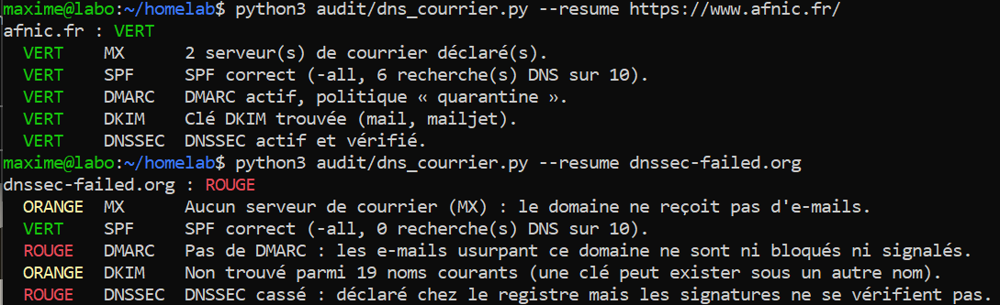
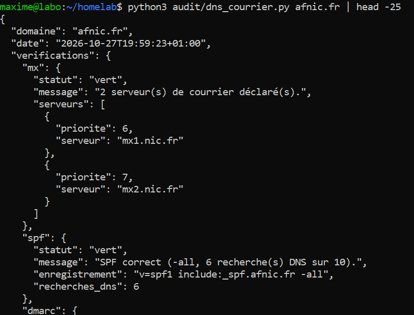
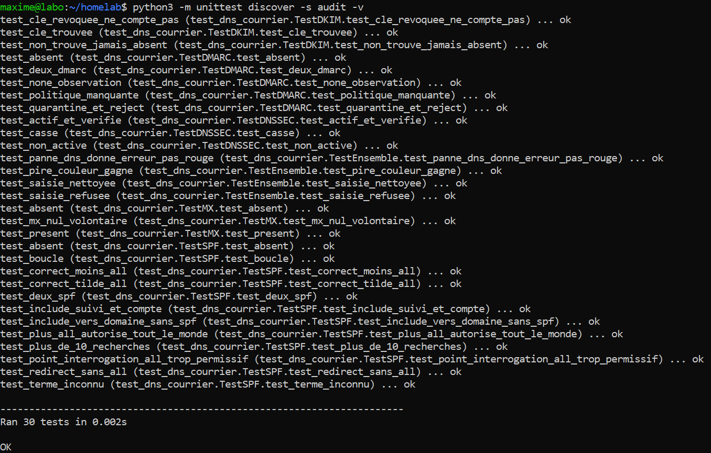
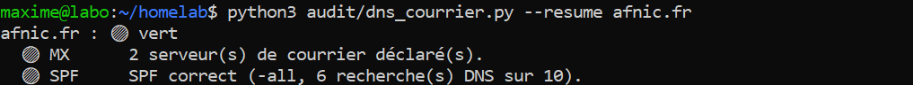

01Objectif
Un script en ligne de commande qui, pour un nom de domaine, vérifie les réglages qui protègent son courrier et rend un résultat en JSON (pour l'historique de l'étape 6 et les rapports de l'étape 8) :
- MX : où arrive le courrier ;
- SPF : qui a le droit d'envoyer des e-mails au nom du domaine ;
- DMARC : ce qu'un serveur doit faire d'un e-mail qui usurpe le domaine ;
- DKIM : la clé qui signe les e-mails envoyés ;
- DNSSEC : la signature des réponses DNS elles-mêmes.
Ce sont exactement les réglages que j'ai faits à la main pour mon premier client (un traiteur) : le script permet de les vérifier chez d'autres, et de suivre mes clients chaque mois.
Cadre : le script ne lit que des informations publiques (des enregistrements DNS, comme n'importe quel serveur de courrier le fait). Pas de scan, pas de recherche de failles. Le vert, orange ou rouge est décidé par des règles écrites dans le script, jamais par une IA.
02Schéma et technologies
python3 audit/dns_courrier.py exemple.fr
│
│ nettoyage de la saisie (https://, www., chemin)
▼
┌──────────────────────┐ questions DNS ┌─────────────────────────────┐
│ dns_courrier.py ├───────────────────►│ Résolveurs publics │
│ MX, SPF (+ include),│ │ 1.1.1.1 (Cloudflare) │
│ DMARC, DKIM (19 │◄───────────────────┤ 9.9.9.9 (Quad9) │
│ noms), DS + AD │ réponses │ vérifient le DNSSEC │
└──────────┬───────────┘ └─────────────────────────────┘
│ règles écrites → vert / orange / rouge / erreur
▼
JSON complet (par défaut) ou une ligne par vérification (--resume)| Rôle | Technologie |
|---|---|
| Langage | Python 3.12 (sur la tour), sans framework |
| Requêtes DNS | dnspython 2.6.1, paquet Ubuntu python3-dnspython (mis à jour par les mises à jour de sécurité automatiques) |
| Résolveurs | Cloudflare 1.1.1.1 et Quad9 9.9.9.9 : ils vérifient le DNSSEC, et le résultat est le même sur le portable et sur la tour |
| Tests | unittest (fourni avec Python), réponses DNS simulées |
| Code | audit/dns_courrier.py, audit/test_dns_courrier.py (dépôt Git privé) |
03Les règles de couleur
| Vérification | Vert | Orange | Rouge |
|---|---|---|---|
| MX | Serveurs déclarés, ou « MX nul » volontaire (le domaine annonce qu'il ne reçoit pas de courrier) | Aucun serveur | — |
| SPF | Se termine par -all ou ~all, au plus 10 recherches DNS | Trop permissif (?all, pas de fin) | Absent, en double, mal écrit, plus de 10 recherches, include cassé ou en boucle, +all |
| DMARC | Politique quarantine ou reject | p=none (observation seulement) | Absent, en double, politique absente |
| DKIM | Clé trouvée | « Non trouvé » parmi 19 noms courants | — |
| DNSSEC | Déclaré chez le registre (DS) et signatures vérifiées (drapeau AD) | Pas activé | Cassé : déclaré mais signatures fausses |
Le résultat global prend la pire couleur. Une panne du DNS donne « erreur » (à refaire), jamais « rouge » : on ne reproche pas au domaine une panne qui n'est pas la sienne.
Quelques points qui demandent de la rigueur :
- Les 10 recherches du SPF : la norme (RFC 7208) limite à 10 le nombre de recherches DNS qu'un serveur fait pour lire un SPF. Au-delà, le SPF est ignoré. Le script suit chaque include et redirect, compte les a, mx, ptr, exists, et repère les boucles.
- DKIM « Non trouvé », jamais « absent » : le DNS ne permet pas de lister les clés DKIM d'un domaine. On ne peut qu'essayer des noms courants (google, selector1, k1…). Ne pas trouver ne prouve pas qu'il n'y en a pas.
- DNSSEC cassé : les requêtes ordinaires sont faites avec le drapeau CD (« ne vérifie pas ») pour que le reste de l'audit marche quand même ; seule la vérification DNSSEC demande la validation.
04Utilisation
cd ~/homelab
python3 audit/dns_courrier.py exemple.fr # JSON complet
python3 audit/dns_courrier.py --resume https://www.exemple.fr/ # une ligne par vérification, en couleur
python3 -m unittest discover -s audit -v # les tests05Tests réussis
| Test | Résultat attendu | Résultat obtenu | Preuve |
|---|---|---|---|
| Domaine bien configuré (afnic.fr, saisi comme une adresse de site) | Tout vert | Conforme | Fig. 1 |
| Domaine au DNSSEC cassé exprès (dnssec-failed.org) | DNSSEC rouge, le reste audité quand même | Conforme | Fig. 1 |
| Résultat en JSON | Statut, message et détails de chaque vérification | Conforme | Fig. 2 |
| Domaine de mon client traiteur (réglé par moi) | Tout vert, y compris la clé DKIM de Cloudflare Email Routing | Conforme | — (pas de capture : nom du client) |
| Domaine qui n'existe pas | « erreur », pas « rouge » | Conforme | — |
| 30 tests automatiques des règles, sur la tour | Ran 30 tests … OK | Conforme | Fig. 3 |
Les tests automatiques remplacent le DNS par des réponses écrites à la main (un SPF en +all, un DMARC en p=none, une boucle d'include…) : ils prouvent que chaque cas donne la bonne couleur, sans internet, et ils signaleront toute erreur introduite plus tard dans le code.






06Problèmes rencontrés et solutions
| Problème | Cause | Solution |
|---|---|---|
| Un domaine au DNSSEC cassé faisait planter tout l'audit | Les résolveurs qui vérifient le DNSSEC refusent de répondre (SERVFAIL) pour ce domaine | Requêtes ordinaires avec le drapeau CD ; seule la vérification DNSSEC demande la validation |
| DKIM « Non trouvé » chez mon client, alors que je l'avais réglé | Cloudflare Email Routing nomme sa clé cf2024-1, absente de ma liste | Nom ajouté (19 noms essayés) ; c'est exactement pourquoi le résultat dit « Non trouvé » et pas « absent » |
| L'adresse du site (https://…/) donnait « le domaine n'existe pas » | Le script attendait un nom de domaine seul | Saisie nettoyée (protocole, chemin, port, www.) ; un texte sans point est refusé avec un message clair |
| Pastilles de couleur illisibles dans le terminal Windows | Les emoji de couleur s'affichaient en ronds gris (Fig. 4) | Statut écrit en toutes lettres et coloré par le terminal (codes ANSI), seulement quand on affiche dans un terminal |


07Ce que j'en retiens
- Tester sur un vrai cas que je connais : le domaine de mon client, dont je savais qu'il devait être tout vert, a révélé deux défauts que les domaines publics ne montraient pas.
- Distinguer « absent », « non trouvé » et « on ne sait pas » : un audit honnête ne conclut pas plus que ce qu'il a vérifié.
- Les règles dans le code, testées : c'est ce qui permettra plus tard de confier la rédaction à une IA sans lui confier le jugement.
- Un domaine cassé exprès (dnssec-failed.org) est un bon moyen de tester un cas d'erreur sans rien casser chez soi.